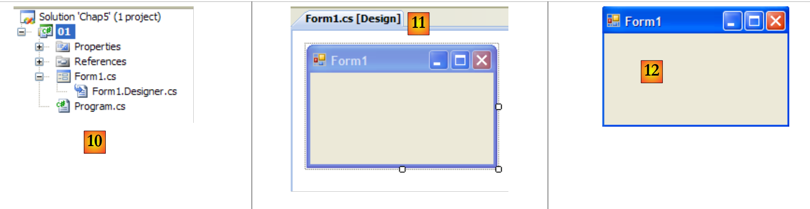
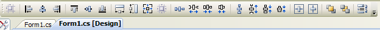
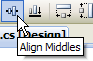
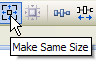
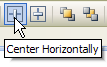
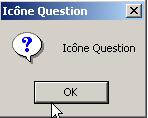
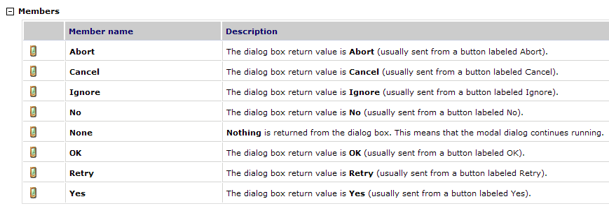
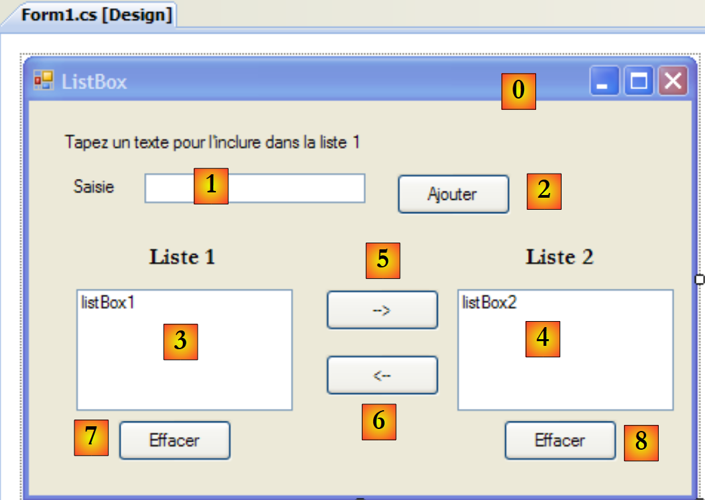
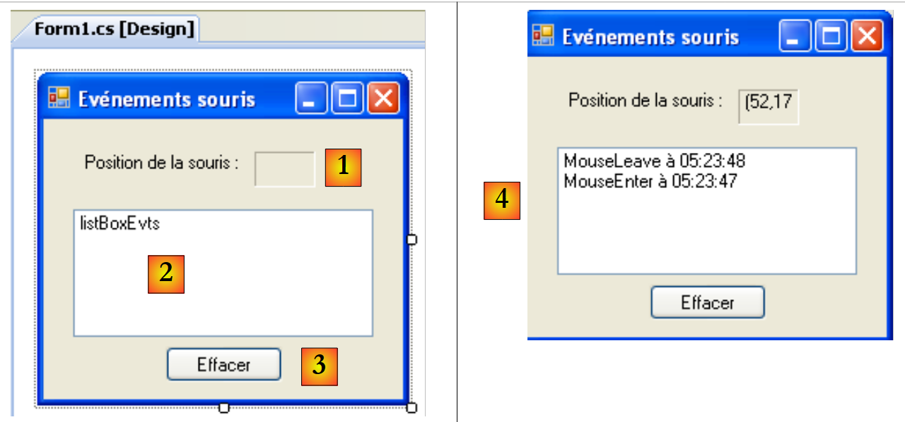

7. Interfaces graphiques avec C# et VS.NET
7.1. Les bases des interfaces graphiques
7.1.1. Un premier projet
Construisons un premier projet de type "Application windows" :
 |
- [1] : créer un nouveau projet
- [2] : de type Application Windows
- [3] : le nom du projet importe peu pour le moment
- [4] : le projet créé
 |
- [5] : on sauvegarde la solution courante
- [6] : nom du projet
- [7] : dossier de la solution
- [8] : nom de la solution
- [9] : un dossier sera créé pour la solution [Chap5]. Les projets de celle-ci seront dans des sous-dossiers.
 |
- [10] : le projet [01] dans la solution [Chap5] :
- [Program.cs] est la classe principale du projet
- [Form1.cs] est le fichier source qui va gérer le comportement de la fenêtre [11]
- [Form1.Designer.cs] est le fichier source qui va encapsuler l'information sur les composants de la fenêtre [11]
- [11] : le fichier [Form1.cs] en mode "conception" (design)
- [12] : l'application générée peut être exécutée par (Ctrl-F5). La fenêtre [Form1] s'affiche. On peut la déplacer, la redimensionner et la fermer. On a donc les éléments de base d'une fenêtre graphique.
La classe principale [Program.cs] est la suivante :
using System;
using System.Windows.Forms;
namespace Chap5 {
static class Program {
/// <summary>
/// The main entry point for the application.
/// </summary>
[STAThread]
static void Main() {
Application.EnableVisualStyles();
Application.SetCompatibleTextRenderingDefault(false);
Application.Run(new Form1());
}
}
}
- ligne 2 : les applications avec formulaires utilisent l'espace de noms System.Windows.Forms.
- ligne 4 : l'espace de noms initial a été renommé en Chap5.
- ligne 10 : à l'exécution du projet (Ctrl-F5), la méthode [Main] est exécutée.
- lignes 11-13 : la classe Application appartient à l'espace de noms System.Windows.Forms. Elle contient des méthodes statiques pour lancer / arrêter les applications graphiques windows.
- ligne 11 : facultative - permet de donner différents styles visuels aux contrôles déposés sur un formulaire
- ligne 12 : facultative - fixe le moteur de rendu des textes des contrôles : GDI+ (true), GDI (false)
- ligne 13 : la seule ligne indispensable de la méthode [Main] : instancie la classe [Form1] qui est la classe du formulaire et lui demande de s'exécuter.
Le fichier source [Form1.cs] est le suivant :
using System;
using System.Windows.Forms;
namespace Chap5 {
public partial class Form1 : Form {
public Form1() {
InitializeComponent();
}
}
}
- ligne 5 : la classe Form1 dérive de la classe [System.Windows.Forms.Form] qui est la classe mère de toutes les fenêtres. Le mot clé partial indique que la classe est partielle et qu'elle peut être complétée par d'autres fichiers source. C'est le cas ici, où la classe Form1 est répartie dans deux fichiers :
- [Form1.cs] : dans lequel on trouvera le comportement du formulaire, notamment ses gestionnaires d'événements
- [Form1.Designer.cs] : dans lequel on trouvera les composants du formulaire et leurs propriétés. Ce fichier a la particularité d'être régénéré à chaque fois que l'utilisateur modifie la fenêtre en mode [conception].
- lignes 6-8 : le constructeur de la classe Form1
- ligne 7 : fait appel à la méthode InitializeComponent. On voit que cette méthode n'est pas présente dans [Form1.cs]. On la trouve dans [Form1.Designer.cs].
Le fichier source [Form1.Designer.cs] est le suivant :
namespace Chap5 {
partial class Form1 {
/// <summary>
/// Required designer variable.
/// </summary>
private System.ComponentModel.IContainer components = null;
/// <summary>
/// Clean up any resources being used.
/// </summary>
/// <param name="disposing">true if managed resources should be disposed; otherwise, false.</param>
protected override void Dispose(bool disposing) {
if (disposing && (components != null)) {
components.Dispose();
}
base.Dispose(disposing);
}
#region Windows Form Designer generated code
/// <summary>
/// Required method for Designer support - do not modify
/// the contents of this method with the code editor.
/// </summary>
private void InitializeComponent() {
this.SuspendLayout();
//
// Form1
//
this.AutoScaleDimensions = new System.Drawing.SizeF(6F, 13F);
this.AutoScaleMode = System.Windows.Forms.AutoScaleMode.Font;
this.ClientSize = new System.Drawing.Size(196, 98);
this.Name = "Form1";
this.Text = "Form1";
this.ResumeLayout(false);
}
#endregion
}
}
- ligne 2 : il s'agit toujours de la classe Form1. On notera qu'il n'est plus besoin de répéter qu'elle dérive de la classe Form.
- lignes 25-37 : la méthode InitializeComponent appelée par le constructeur de la classe [Form1]. Cette méthode va créer et initialiser tous les composants du formulaire. Elle est régénérée à chaque changement de celui-ci en mode [conception]. Une section, appelée région, est créée pour la délimiter lignes 19-39. Le développeur ne doit pas ajouter de code dans cette région : il sera écrasé à la régénération suivante.
Il est plus simple dans un premier temps de ne pas s'intéresser au code de [Form1.Designer.cs]. Il est généré automatiquement et est la traduction en langage C# des choix que le développeur fait en mode [conception]. Prenons un premier exemple :
 |
- [1] : sélectionner le mode [conception] en double-cliquant sur le fichier [Form1.cs]
- [2] : cliquer droit sur le formulaire et choisir [Properties]
- [3] : la fenêtre des propriétés de [Form1]
- [4] : la propriété [Text] représente le titre de la fenêtre
- [5] : le changement de la propriété [Text] est pris en compte en mode [conception] ainsi que dans le code source [Form1.Designer.cs] :
private void InitializeComponent() {
this.SuspendLayout();
...
this.Text = "Mon 1er formulaire";
...
}
7.1.2. Un second projet
7.1.2.1. Le formulaire
Nous commençons un nouveau projet appelé 02. Pour cela nous suivons la procédure explicitée précédemment pour créer un projet. La fenêtre à créer est la suivante :
 |
Les composants du formulaire sont les suivants :
n° | nom | type | rôle |
1 | labelSaisie | Label | un libellé |
2 | textBoxSaisie | TextBox | une zone de saisie |
3 | buttonAfficher | Button | pour afficher dans une boîte de dialogue le contenu de la zone de saisie textBoxSaisie |
On pourra procéder comme suit pour construire cette fenêtre :
 |
- [1] : cliquer droit sur le formulaire en-dehors de tout composant et choisir l'option [Properties]
- [2] : la feuille de propriétés de la fenêtre apparaît dans le coin inférieur droit de Visual studio
Parmi les propriétés du formulaire à noter :
pour fixer la couleur de fond de la fenêtre | |
pour fixer la couleur des dessins ou du texte sur la fenêtre | |
pour associer un menu à la fenêtre | |
pour donner un titre à la fenêtre | |
pour fixer le type de fenêtre | |
pour fixer la police de caractères des écritures dans la fenêtre | |
pour fixer le nom de la fenêtre |
Ici, nous fixons les propriétés Text et Name :
Saisies et boutons - 1 | |
frmSaisiesBoutons |
 |
- [1] : choisir la boîte à outils [Common Controls] parmi les boîtes à outils proposées par Visual Studio
- [2, 3, 4] : double-cliquer successivement sur les composants [Label], [Button] et [TextBox]
- [5] : les trois composants sont sur le formulaire
Pour aligner et dimensionner correctement les composants, on peut utiliser les éléments de la barre d'outils :
 |
 |  |  |  |  |  |  |  |
 |  |  |  |  | |||
Le principe du formatage est le suivant :
- sélectionnez les différents composants à formater ensemble (touche Ctrl appuyée pendant les différents clics sélectionnant les composants)
- sélectionnez le type de formatage désiré :
- (suite)
- les options Align permettent d'aligner des composants par le haut, le bas, le côté gauche ou droit, le milieu
- les options Make Same Size permettent que des composants aient la même hauteur ou la même largeur
- l'option Horizontal Spacing permet d'aligner horizontalement des composants avec des intervalles entre eux de même largeur. Idem pour l'option Vertical Spacing pour aligner verticalement.
- l'option Center permet de centrer un composant horizontalement (Horizontally) ou verticalement (Vertically) dans la fenêtre
Une fois placés les composants nous fixons leurs propriétés. Pour cela, cliquer droit sur le composant et prendre l'option Properties :
 |
- [1] : sélectionner le composant pour avoir sa fenêtre de propriétés. Dans celle-ci, modifier les propriétés suivantes : name : labelSaisie, text : Saisie
- [2] : procéder de même : name : textBoxSaisie, text : ne rien mettre
- [3] : name : buttonAfficher, text : Afficher
- [4] : la fenêtre elle-même : name : frmSaisiesBoutons, text : Saisies et boutons - 1
- [5] : exécuter (Ctrl-F5) le projet pour avoir un premier aperçu de la fenêtre en action.
Ce qui a été fait en mode [conception] a été traduit dans le code de [Form1.Designer.cs] :
namespace Chap5 {
partial class frmSaisiesBoutons {
...
private System.ComponentModel.IContainer components = null;
...
private void InitializeComponent() {
this.labelSaisie = new System.Windows.Forms.Label();
this.buttonAfficher = new System.Windows.Forms.Button();
this.textBoxSaisie = new System.Windows.Forms.TextBox();
this.SuspendLayout();
//
// labelSaisie
//
this.labelSaisie.AutoSize = true;
this.labelSaisie.Location = new System.Drawing.Point(12, 19);
this.labelSaisie.Name = "labelSaisie";
this.labelSaisie.Size = new System.Drawing.Size(35, 13);
this.labelSaisie.TabIndex = 0;
this.labelSaisie.Text = "Saisie";
//
// buttonAfficher
//
this.buttonAfficher.Location = new System.Drawing.Point(80, 49);
this.buttonAfficher.Name = "buttonAfficher";
this.buttonAfficher.Size = new System.Drawing.Size(75, 23);
this.buttonAfficher.TabIndex = 1;
this.buttonAfficher.Text = "Afficher";
this.buttonAfficher.UseVisualStyleBackColor = true;
this.buttonAfficher.Click += new System.EventHandler(this.buttonAfficher_Click);
//
// textBoxSaisie
//
this.textBoxSaisie.Location = new System.Drawing.Point(80, 19);
this.textBoxSaisie.Name = "textBoxSaisie";
this.textBoxSaisie.Size = new System.Drawing.Size(100, 20);
this.textBoxSaisie.TabIndex = 2;
//
// frmSaisiesBoutons
//
this.AutoScaleDimensions = new System.Drawing.SizeF(6F, 13F);
this.AutoScaleMode = System.Windows.Forms.AutoScaleMode.Font;
this.ClientSize = new System.Drawing.Size(292, 118);
this.Controls.Add(this.textBoxSaisie);
this.Controls.Add(this.buttonAfficher);
this.Controls.Add(this.labelSaisie);
this.Name = "frmSaisiesBoutons";
this.Text = "Saisies et boutons - 1";
this.ResumeLayout(false);
this.PerformLayout();
}
private System.Windows.Forms.Label labelSaisie;
private System.Windows.Forms.Button buttonAfficher;
private System.Windows.Forms.TextBox textBoxSaisie;
}
}
- lignes 53-55 : les trois composants ont donné naissance à trois champs privés de la classe [Form1]. On notera que les noms de ces champs sont les noms donnés aux composants en mode [conception]. C'est le cas également du formulaire ligne 2 qui est la classe elle-même.
- lignes 7-9 : les trois objets de type [Label], [TextBox] et [Button] sont créés. C'est à travers eux que les composants visuels sont gérés.
- lignes 14-19 : configuration du label labelSaisie
- lignes 23-29 : configuration du bouton buttonAfficher
- lignes 33-36 : configuration du champ de saisie textBoxSaisie
- lignes 40-47 : configuration du formulaire frmSaisiesBoutons. On notera, lignes 43-45, la façon d'ajouter des composants au formulaire.
Ce code est compréhensible. Il est ainsi possible de construire des formulaires par code sans utiliser le mode [conception]. De nombreux exemples de ceci sont donnés dans la documentation MSDN de Visual Studio. Maîtriser ce code permet de créer des formulaires en cours d'exécution : par exemple, créer à la volée un formulaire permettant la mise à jour d'une table de base de données, la structure de cette table n'étant découverte qu'à l'exécution.
Il nous reste à écrire la procédure de gestion d'un clic sur le bouton Afficher. Sélectionner le bouton pour avoir accès à sa fenêtre de propriétés. Celle-ci a plusieurs onglets :
 |
- [1] : liste des propriétés par ordre alphabétique
- [2] : événements liés au contrôle
Les propriétés et événements d'un contrôle sont accessibles par catégories ou par ordre alphabétique :
- [3] : Propriétés ou événements par catégorie
- [4] : Propriétés ou événements par ordre alphabétique
L'onglet Events en mode Catégories pour le bouton buttonAfficher est le suivant :
 |
- [1] : la colonne de gauche de la fenêtre liste les événements possibles sur le bouton. Un clic sur un bouton correspond à l'événement Click.
- [2] : la colonne de droite contient le nom de la procédure appelée lorsque l'événement correspondant se produit.
- [3] : si on double-clique sur la cellule de l'événement Click, on passe alors automatiquement dans la fenêtre de code pour écrire le gestionnaire de l'événement Click sur le bouton buttonAfficher :
using System;
using System.Windows.Forms;
namespace Chap5 {
public partial class frmSaisiesBoutons : Form {
public frmSaisiesBoutons() {
InitializeComponent();
}
private void buttonAfficher_Click(object sender, EventArgs e) {
}
}
}
- lignes 10-12 : le squelette du gestionnaire de l'événement Click sur le bouton nommé buttonAfficher. On notera les points suivants :
- la méthode est nommée selon le schéma nomDuComposant_NomEvénement
- la méthode est privée. Elle reçoit deux paramètres :
- sender : est l'objet qui a provoqué l'événement. Si la procédure est exécutée à la suite d'un clic sur le bouton buttonAfficher, sender sera égal à buttonAfficher. On peut imaginer que la procédure buttonAfficher_Click soit exécutée à partir d'une autre procédure. Celle-ci aurait alors tout loisir de mettre comme premier paramètre, l'objet sender de son choix.
- EventArgs : un objet qui contient des informations sur l'événement. Pour un événement Click, il ne contient rien. Pour un événement ayant trait aux déplacements de la souris, on y trouvera les coordonnées (X,Y) de la souris.
- nous n'utiliserons aucun de ces paramètres ici.
Ecrire un gestionnaire d'événement consiste à compléter le squelette de code précédent. Ici, nous voulons présenter une boîte de dialogue avec dedans, le contenu du champ textBoxSaisie s'il est non vide [1], un message d'erreur sinon [2] :
 |
Le code réalisant cela pourrait-être le suivant :
private void buttonAfficher_Click(object sender, EventArgs e) {
// on affiche le texte qui a été saisi dans le TextBox textboxSaisie
string texte = textBoxSaisie.Text.Trim();
if (texte.Length != 0) {
MessageBox.Show("Texte saisi= " + texte, "Vérification de la saisie", MessageBoxButtons.OK, MessageBoxIcon.Information);
} else {
MessageBox.Show("Saissez un texte...", "Vérification de la saisie", MessageBoxButtons.OK, MessageBoxIcon.Error);
}
La classe MessageBox sert à afficher des messages dans une fenêtre. Nous avons utilisé ici la méthode Show suivante :
public static DialogResult Show(string text, string caption, MessageBoxButtons buttons, MessageBoxIcon icon);
avec
le message à afficher | |
le titre de la fenêtre | |
les boutons présents dans la fenêtre | |
l'icone présente dans la fenêtre |
Le paramètre buttons peut prendre ses valeurs parmi les constantes suivantes (préfixées par MessageBoxButtons comme montré ligne 7) ci-dessus :
boutons | |
 | |
 | |
 | |
 | |
 | |
 |
Le paramètre icon peut prendre ses valeurs parmi les constantes suivantes (préfixées par MessageBoxIcon comme montré ligne 10) ci-dessus :
 | idem Stop | ||
idem Warning |  | ||
idem Asterisk |  | ||
 | idem Hand | ||
 |
La méthode Show est une méthode statique qui rend un résultat de type [System.Windows.Forms.DialogResult] qui est une énumération :

Pour savoir sur quel bouton a appuyé l'utilisateur pour fermer la fenêtre de type MessageBox on écrira :
7.1.2.2. Le code lié à la gestion des événements
Outre la fonction buttonAfficher_Click que nous avons écrite, Visual studio a généré dans la méthode InitializeComponents de [Form1.Designer.cs] qui crée et initialise les composants du formulaire, la ligne suivante :
this.buttonAfficher.Click += new System.EventHandler(this.buttonAfficher_Click);
Click est un événement de la classe Button [1, 2, 3] :
 |
- [5] : la déclaration de l'événement [Control.Click] [4]. Ainsi on voit que l'événement Click n'est pas propre à la classe [Button]. Il appartient à la classe [Control], classe parente de la classe [Button].
- EventHandler est un prototype (un modèle ) de méthode appelé delegate. Nous y allons y revenir.
- event est un mot clé qui restreint les fonctionnalités du delegate EventHandler : un objet delegate a des fonctionnalités plus riches qu'un objet event.
Le delegate EventHandler est défini comme suit :
 |
Le delegate EventHandler désigne un modèle de méthode :
- ayant pour 1er paramètre un type Object
- ayant pour 2ième paramètre un type EventArgs
- ne rendant aucun résultat
C'est le cas de la méthode de gestion du clic sur le bouton buttonAfficher qui a été générée par Visual Studio :
private void buttonAfficher_Click(object sender, EventArgs e);
Ainsi la méthode buttonAfficher_Click correspond au prototype défini par le type EventHandler. Pour créer un objet de type EventHandler, on procède comme suit :
EventHandler evtHandler=new EventHandler(méthode correspondant au prototype défini par le type EventHandler);
Puisque la méthode buttonAfficher_Click correspond au prototype défini par le type EventHandler, on pourra écrire :
Une variable de type delegate est en fait une liste de références sur des méthodes du type du delegate. Pour ajouter une nouvelle méthode M à la variable evtHandler ci-dessus, on utilisera la syntaxe :
La notation += peut être utilisée même si evtHandler est une liste vide.
Revenons à la ligne de [InitializeComponent] qui ajoute un gestionnaire d'événement à l'événement Click de l'objet buttonAfficher :
this.buttonAfficher.Click += new System.EventHandler(this.buttonAfficher_Click);
Cette instruction ajoute une méthode de type EventHandler à la liste des méthodes du champ buttonAfficher.Click. Ces méthodes seront appelées à chaque fois que l'événement Click sur le composant buttonAfficher sera détecté. Il n'y en a souvent qu'une. On l'appelle le "gestionnaire de l'événement".
Revenons sur la signature de EventHandler :
private delegate void EventHandler(object sender, EventArgs e);
Le second paramètre du delegate est un objet de type EventArgs ou d'une classe dérivée. Le type EventArgs est très général et n'apporte en fait aucune information sur l'événement qui s'est produit. Pour un clic sur un bouton, c'est suffisant. Pour un déplacement de souris sur un formulaire, on aurait un événement MouseMove de la classe [Form] défini par :
Le delegate MouseEventHandler est défini comme :
 |
C'est une fonction déléguée (delegate) de signature void f (object, MouseEventArgs). La classe MouseEventArgs est elle définie par :
 |
La classe MouseEventArgs est plus riche que la classe EventArgs. On peut par exemple connaître les coordonnées de la souris X et Y au moment où se produit l'événement.
7.1.2.3. Conclusion
Des deux projets étudiés, nous pouvons conclure qu'une fois l'interface graphique construite avec Visual studio, le travail du développeur consiste principalement à écrire les gestionnaires des événements qu'il veut gérer pour cette interface graphique. Du code est généré automatiquement par Visual Studio. Ce code, qui peut être complexe, peut être ignoré en première approche. Ultérieurement, son étude peut permettre une meilleure compréhension de la création et de la gestion des formulaires.
7.2. Les composants de base
Nous présentons maintenant diverses applications mettant en jeu les composants les plus courants afin de découvrir les principales méthodes et propriétés de ceux-ci. Pour chaque application, nous présentons l'interface graphique et le code intéressant, principalement celui des gestionnaires d'événements.
7.2.1. Formulaire Form
Nous commençons par présenter le composant indispensable, le formulaire sur lequel on dépose des composants. Nous avons déjà présenté quelques-unes de ses propriétés de base. Nous nous attardons ici sur quelques événements importants d'un formulaire.
le formulaire est en cours de chargement | |
le formulaire est en cours de fermeture | |
le formulaire est fermé |
L'événement Load se produit avant même que le formulaire ne soit affiché. L'événement Closing se produit lorsque le formulaire est en cours de fermeture. On peut encore arrêter cette fermeture par programmation.
Nous construisons un formulaire de nom Form1 sans composant :
 |
- [1] : le formulaire
- [2] : les trois événements traités
Le code de [Form1.cs] est le suivant :
using System;
using System.Windows.Forms;
namespace Chap5 {
public partial class Form1 : Form {
public Form1() {
InitializeComponent();
}
private void Form1_Load(object sender, EventArgs e) {
// chargement initial du formulaire
MessageBox.Show("Evt Load", "Load");
}
private void Form1_FormClosing(object sender, FormClosingEventArgs e) {
// le formulaire est en train de se fermer
MessageBox.Show("Evt FormClosing", "FormClosing");
// on demande confirmation
DialogResult réponse = MessageBox.Show("Voulez-vous vraiment quitter l'application", "Closing", MessageBoxButtons.YesNo, MessageBoxIcon.Question);
if (réponse == DialogResult.No)
e.Cancel = true;
}
private void Form1_FormClosed(object sender, FormClosedEventArgs e) {
// le formulaire va être fermé
MessageBox.Show("Evt FormClosed", "FormClosed");
}
}
}
Nous utilisons la fonction MessageBox pour être averti des différents événements.
ligne 10 : L'événement Load va se produire au démarrage de l'application avant même que le formulaire ne s'affiche : |  |
ligne 15 : L'événement FormClosing va se produire lorsque l'utilisateur ferme la fenêtre. |  |
ligne 19 : Nous lui demandons alors s'il veut vraiment quitter l'application : |  |
ligne 20 : S'il répond Non, nous fixons la propriété Cancel de l'événement CancelEventArgs e que la méthode a reçu en paramètre. Si nous mettons cette propriété à False, la fermeture de la fenêtre est abandonnée, sinon elle se poursuit. L'événement FormClosed va alors se produire : |  |
7.2.2. Etiquettes Label et boîtes de saisie TextBox
Nous avons déjà rencontré ces deux composants. Label est un composant texte et TextBox un composant champ de saisie. Leur propriété principale est Text qui désigne soit le contenu du champ de saisie soit le texte du libellé. Cette propriété est en lecture/écriture.
L'événement habituellement utilisé pour TextBox est TextChanged qui signale que l'utilisateur à modifié le champ de saisie. Voici un exemple qui utilise l'événement TextChanged pour suivre les évolutions d'un champ de saisie :
 |
n° | type | nom | rôle |
1 | TextBox | textBoxSaisie | champ de saisie |
2 | Label | labelControle | affiche le texte de 1 en temps réel AutoSize=False, Text=(rien) |
3 | Button | buttonEffacer | pour effacer les champs 1 et 2 |
4 | Button | buttonQuitter | pour quitter l'application |
Le code de cette application est le suivant :
using System.Windows.Forms;
namespace Chap5 {
public partial class Form1 : Form {
public Form1() {
InitializeComponent();
}
private void textBoxSaisie_TextChanged(object sender, System.EventArgs e) {
// le contenu du TextBox a changé - on le copie dans le Label labelControle
labelControle.Text = textBoxSaisie.Text;
}
private void buttonEffacer_Click(object sender, System.EventArgs e) {
// on efface le contenu de la boîte de saisie
textBoxSaisie.Text = "";
}
private void buttonQuitter_Click(object sender, System.EventArgs e) {
// clic sur bouton Quitter - on quitte l'application
Application.Exit();
}
private void Form1_Shown(object sender, System.EventArgs e) {
// on met le focus sur le champ de saisie
textBoxSaisie.Focus();
}
}
}
- ligne 24 : l'événement [Form].Shown a lieu lorsque le formulaire est affiché
- ligne 26 : on met alors le focus (pour une saisie) sur le composant textBoxSaisie.
- ligne 9 : l'événement [TextBox].TextChanged se produit à chaque fois que le contenu d'un composant TextBox change
- ligne 11 : on recopie le contenu du composant [TextBox] dans le composant [Label]
- ligne 14 : gère le clic sur le bouton [Effacer]
- ligne 16 : on met la chaîne vide dans le composant [TextBox]
- ligne 19 : gère le clic sur le bouton [Quitter]
- ligne 21 : pour arrêter l'application en cours d'exécution. On se rappelle que l'objet Application sert à lancer l'application dans la méthode [Main] de [Form1.cs] :
static void Main() {
Application.EnableVisualStyles();
Application.SetCompatibleTextRenderingDefault(false);
Application.Run(new Form1());
}
L'exemple suivant utilise un TextBox multilignes :
 |
La liste des contrôles est la suivante :
n° | type | nom | rôle |
1 | TextBox | textBoxLignes | champ de saisie multilignes Multiline=true, ScrollBars=Both, AcceptReturn=True, AcceptTab=True |
2 | TextBox | textBoxLigne | champ de saisie monoligne |
3 | Button | buttonAjouter | Ajoute le contenu de 2 à 1 |
Pour qu'un TextBox devienne multilignes on positionne les propriétés suivantes du contrôle :
pour accepter plusieurs lignes de texte | |
pour demander à ce que le contrôle ait des barres de défilement (Horizontal, Vertical, Both) ou non (None) | |
si égal à true, la touche Entrée fera passer à la ligne | |
si égal à true, la touche Tab générera une tabulation dans le texte |
L'application permet de taper des lignes directement dans [1] ou d'en ajouter via [2] et [3].
Le code de l'application est le suivant :
using System.Windows.Forms;
using System;
namespace Chap5 {
public partial class Form1 : Form {
public Form1() {
InitializeComponent();
}
private void buttonAjouter_Click(object sender, System.EventArgs e) {
// ajout du contenu de textBoxLigne à celui de textBoxLignes
textBoxLignes.Text += textBoxLigne.Text+Environment.NewLine;
textBoxLigne.Text = "";
}
private void Form1_Shown(object sender, EventArgs e) {
// on met le focus sur le champ de saisie
textBoxLigne.Focus();
}
}
}
- ligne 18 : lorsque le formulaire est affiché (évt Shown), on met le focus sur le champ de saisie textBoxLigne
- ligne 10 : gère le clic sur le bouton [Ajouter]
- ligne 12 : le texte du champ de saisie textBoxLigne est ajouté au texte du champ de saisie textBoxLignes suivi d'un saut de ligne.
- ligne 13 : le champ de saisie textBoxLigne est effacé
7.2.3. Listes déroulantes ComboBox
Nous créons le formulaire suivant :
 |
n° | type | nom | rôle |
1 | ComboBox | comboNombres | contient des chaînes de caractères DropDownStyle=DropDownList |
Un composant ComboBox est une liste déroulante doublée d'une zone de saisie : l'utilisateur peut soit choisir un élément dans (2) soit taper du texte dans (1). Il existe trois sortes de ComboBox fixées par la propriété DropDownStyle :
liste non déroulante avec zone d'édition | |
liste déroulante avec zone d'édition | |
liste déroulante sans zone d'édition |
Par défaut, le type d'un ComboBox est DropDown.
La classe ComboBox a un seul constructeur :
crée un combo vide |
Les éléments du ComboBox sont disponibles dans la propriété Items :
C'est une propriété indexée, Items[i] désignant l'élément i du Combo. Elle est en lecture seule.
Soit C un combo et C.Items sa liste d'éléments. On a les propriétés suivantes :
nombre d'éléments du combo | |
élément i du combo | |
ajoute l'objet o en dernier élément du combo | |
ajoute un tableau d'objets en fin de combo | |
ajoute l'objet o en position i du combo | |
enlève l'élément i du combo | |
enlève l'objet o du combo | |
supprime tous les éléments du combo | |
rend la position i de l'objet o dans le combo | |
index de l'élément sélectionné | |
élément sélectionné | |
texte affiché de l'élément sélectionné | |
texte affiché de l'élément sélectionné |
On peut s'étonner qu'un combo puisse contenir des objets alors que visuellement il affiche des chaînes de caractères. Si un ComboBox contient un objet obj, il affiche la chaîne obj.ToString(). On se rappelle que tout objet a une méthode ToString héritée de la classe object et qui rend une chaîne de caractères "représentative" de l'objet.
L'élément Item sélectionné dans le combo C est C.SelectedItem ou C.Items[C.SelectedIndex] où C.SelectedIndex est le n° de l'élément sélectionné, ce n° partant de zéro pour le premier élément. Le texte sélectionné peut être obtenu de diverses façons : C.SelectedItem.Text, C.Text
Lors du choix d'un élément dans la liste déroulante se produit l'événement SelectedIndexChanged qui peut être alors utilisé pour être averti du changement de sélection dans le combo. Dans l'application suivante, nous utilisons cet événement pour afficher l'élément qui a été sélectionné dans la liste.
 |
Le code de l'application est le suivant :
using System.Windows.Forms;
namespace Chap5 {
public partial class Form1 : Form {
private int previousSelectedIndex=0;
public Form1() {
InitializeComponent();
// remplissage combo
comboBoxNombres.Items.AddRange(new string[] { "zéro", "un", "deux", "trois", "quatre" });
// sélection élément n° 0
comboBoxNombres.SelectedIndex = 0;
}
private void comboBoxNombres_SelectedIndexChanged(object sender, System.EventArgs e) {
int newSelectedIndex = comboBoxNombres.SelectedIndex;
if (newSelectedIndex != previousSelectedIndex) {
// l'élément sélectionné à changé - on l'affiche
MessageBox.Show(string.Format("Elément sélectionné : ({0},{1})", comboBoxNombres.Text, newSelectedIndex), "Combo", MessageBoxButtons.OK, MessageBoxIcon.Information);
// on note le nouvel index
previousSelectedIndex = newSelectedIndex;
}
}
}
}
- ligne 5 : previousSelectedIndex mémorise le dernier index sélectionné dans le combo
- ligne 10 : remplissage du combo avec un tableau de chaînes de caractères
- ligne 12 : le 1er élément est sélectionné
- ligne 15 : la méthode exécutée à chaque fois que l'utilisateur sélectionne un élément du combo. Contrairement à ce que pourrait laisser croire le nom de l'événement, celui-ci a lieu même si l'élément sélectionné est le même que le précédent.
- ligne 16 : on note l'index de l'élément sélectionné
- ligne 17 : s'il est différent du précédent
- ligne 19 : on affiche le n° et le texte de l'élément sélectionné
- ligne 21 : on note le nouvel index
7.2.4. Composant ListBox
On se propose de construire l'interface suivante :
 |
Les composants de cette fenêtre sont les suivants :
n° | type | nom | rôle/propriétés |
0 | Form | Form1 | formulaire FormBorderStyle=FixedSingle (cadre non redimensionable) |
1 | TextBox | textBoxSaisie | champ de saisie |
2 | Button | buttonAjouter | bouton permettant d'ajouter le contenu du champ de saisie [1] dans la liste [3] |
3 | ListBox | listBox1 | liste 1 SelectionMode=MultiExtended : |
4 | ListBox | listBox2 | liste 2 SelectionMode=MultiSimple : |
5 | Button | button1vers2 | transfère les éléments sélectionnés de liste 1 vers liste 2 |
6 | Button | button2vers1 | fait l'inverse |
7 | Button | buttonEffacer1 | vide la liste 1 |
8 | Button | buttonEffacer2 | vide la liste 2 |
Les composants ListBox ont un mode de sélection de leurs éléments qui est défini par leur propriété SelectionMode :
un seul élément peut être sélectionné | |
multi-sélection possible : maintenir appuyée la touche SHIFT et cliquer sur un élément étend la sélection de l'élément précédemment sélectionné à l'élément courant. | |
multi-sélection possible : un élément est sélectionné / désélectionné par un clic de souris ou par appui sur la barre d'espace. |
- L'utilisateur tape du texte dans le champ 1. Il l'ajoute à la liste 1 avec le bouton Ajouter (2). Le champ de saisie (1) est alors vidé et l'utilisateur peut ajouter un nouvel élément.
- Il peut transférer des éléments d'une liste à l'autre en sélectionnant l'élément à transférer dans l'une des listes et en choississant le bouton de transfert adéquat 5 ou 6. L'élément transféré est ajouté à la fin de la liste de destination et enlevé de la liste source.
- Il peut double-cliquer sur un élément de la liste 1. Cet élément est alors transféré dans la boîte de saisie pour modification et enlevé de la liste 1.
Les boutons sont allumés ou éteints selon les règles suivantes :
- le bouton Ajouter n'est allumé que s'il y a un texte non vide dans le champ de saisie
- le bouton [5] de transfert de la liste 1 vers la liste 2 n'est allumé que s'il y a un élément sélectionné dans la liste 1
- le bouton [6] de transfert de la liste 2 vers la liste 1 n'est allumé que s'il y a un élément sélectionné dans la liste 2
- les boutons [7] et [8] d'effacement des listes 1 et 2 ne sont allumés que si la liste à effacer contient des éléments.
Dans les conditions précédentes, tous les boutons doivent être éteints lors du démarrage de l'application. C'est la propriété Enabled des boutons qu'il faut alors positionner à false. On peut le faire au moment de la conception ce qui aura pour effet de générer le code correspondant dans la méthode InitializeComponent ou le faire nous-mêmes dans le constructeur comme ci-dessous :
public Form1() {
InitializeComponent();
// --- initialisations complémentaires ---
// on inhibe un certain nombre de boutons
buttonAjouter.Enabled = false;
button1vers2.Enabled = false;
button2vers1.Enabled = false;
buttonEffacer1.Enabled = false;
buttonEffacer2.Enabled = false;
}
L'état du bouton Ajouter est contrôlé par le contenu du champ de saisie. C'est l'événement TextChanged qui nous permet de suivre les changements de ce contenu :
private void textBoxSaisie_TextChanged(object sender, System.EventArgs e) {
// le contenu de textBoxSaisie a changé
// le bouton Ajouter n'est allumé que si la saisie est non vide
buttonAjouter.Enabled = textBoxSaisie.Text.Trim() != "";
}
L'état des boutons de transfert dépend du fait qu'un élément a été sélectionné ou non dans la liste qu'ils contrôlent :
private void listBox1_SelectedIndexChanged(object sender, System.EventArgs e) {
// un élément a été sélectionné
// on allume le bouton de transfert 1 vers 2
button1vers2.Enabled = true;
}
private void listBox2_SelectedIndexChanged(object sender, System.EventArgs e) {
// un élément a été sélectionné
// on allume le bouton de transfert 2 vers 1
button2vers1.Enabled = true;
}
Le code associé au clic sur le bouton Ajouter est le suivant :
private void buttonAjouter_Click(object sender, System.EventArgs e) {
// ajout d'un nouvel élément à la liste 1
listBox1.Items.Add(textBoxSaisie.Text.Trim());
// raz de la saisie
textBoxSaisie.Text = "";
// Liste 1 n'est pas vide
buttonEffacer1.Enabled = true;
// retour du focus sur la boîte de saisie
textBoxSaisie.Focus();
}
On notera la méthode Focus qui permet de mettre le "focus" sur un contrôle du formulaire. Le code associé au clic sur les boutons Effacer :
private void buttonEffacer1_Click(object sender, System.EventArgs e) {
// on efface la liste 1
listBox1.Items.Clear();
// bouton Effacer
buttonEffacer1.Enabled = false;
}
private void buttonEffacer2_Click(object sender, System.EventArgs e) {
// on efface la liste 2
listBox2.Items.Clear();
// bouton Effacer
buttonEffacer2.Enabled = false;
}
Le code de transfert des éléments sélectionnés d'une liste vers l'autre :
private void button1vers2_Click(object sender, System.EventArgs e) {
// transfert de l'élément sélectionné dans Liste 1 dans Liste 2
transfert(listBox1, button1vers2, buttonEffacer1, listBox2, button2vers1, buttonEffacer2);
}
private void button2vers1_Click(object sender, System.EventArgs e) {
// transfert de l'élément sélectionné dans Liste 2 dans Liste 1
transfert(listBox2, button2vers1, buttonEffacer2, listBox1, button1vers2, buttonEffacer1);
}
Les deux méthodes ci-dessus délèguent le transfert des éléments sélectionnés d'une liste à l'autre à une même méthode privée appelée transfert :
// transfert
private void transfert(ListBox l1, Button button1vers2, Button buttonEffacer1, ListBox l2, Button button2vers1, Button buttonEffacer2) {
// transfert dans la liste l2 des éléments sélectionnés de la liste l1
for (int i = l1.SelectedIndices.Count - 1; i >= 0; i--) {
// index de l'élément sélectionné
int index = l1.SelectedIndices[i];
// ajout dans l2
l2.Items.Add(l1.Items[index]);
// suppression dans l1
l1.Items.RemoveAt(index);
}
// boutons Effacer
buttonEffacer2.Enabled = l2.Items.Count != 0;
buttonEffacer1.Enabled = l1.Items.Count != 0;
// boutons de transfert
button1vers2.Enabled = false;
}
- ligne b : la méthode transfert reçoit six paramètres :
- une référence sur la liste contenant les éléments sélectionnés appelée ici l1. Lors de l'exécution de l'application, l1 est soit listBox1 soit listBox2. On voit des exemples d'appel, lignes 3 et 8 des procédures de transfert buttonXversY_Click.
- une référence sur le bouton de transfert lié à la liste l1. Par exemple si l1 est listBox2, ce sera button2vers1( cf appel ligne 8)
- une référence sur le bouton d'effacement de la liste l1. Par exemple si l1 est listBox1, ce sera buttonEffacer1( cf appel ligne 3)
- les trois autres références sont analogues mais font référence à la liste l2.
- ligne d : la collection [ListBox].SelectedIndices représente les indices des éléments sélectionnés dans le composant [ListBox]. C'est une collection :
- [ListBox].SelectedIndices.Count est le nombre d'élément de cette collection
- [ListBox].SelectedIndices[i] est l'élément n° i de cette collection
On parcourt la collection en sens inverse : on commence par la fin de la collection pour terminer par le début. Nous expliquerons pourquoi.
- ligne f : indice d'un élément sélectionné de la liste l1
- ligne h : cet élément est ajouté dans la liste l2
- ligne j : et supprimé de la liste l1. Parce qu'il est supprimé, il n'est plus sélectionné. La collection l1.SelectedIndices de la ligne d va être recalculée. Elle va perdre l'élément qui vient d'être supprimé. Tous les éléments qui sont après celui-ci vont voir leur n° passer de n à n-1.
- si la boucle de la ligne (d) est croissante et qu'elle vient de traiter l'élément n° 0, elle va ensuite traiter l'élément n° 1. Or l'élément qui portait le n° 1 avant la suppression de l'élément n° 0, va ensuite porter le n° 0. Il sera alors oublié par la boucle.
- si la boucle de la ligne (d) est décroissante et qu'elle vient de traiter l'élément n° n, elle va ensuite traiter l'élément n° n-1. Après suppression de l'élément n° n, l'élément n° n-1 ne change pas de n°. Il est donc traité au tour de boucle suivant.
- lignes m-n : l'état des boutons [Effacer] dépend de la présence ou non d'éléments dans les listes associées
- ligne p : la liste l2 n'a plus d'éléments sélectionnés : on éteint son bouton de transfert.
7.2.5. Cases à cocher CheckBox, boutons radio ButtonRadio
Nous nous proposons d'écrire l'application suivante :
 |
Les composants de la fenêtre sont les suivants :
n° | type | nom | rôle |
1 | GroupBox cf [6] | groupBox1 | un conteneur de composants. On peut y déposer d'autres composants. Text=Boutons radio |
2 | RadioButton | radioButton1 radioButton2 radioButton3 | 3 boutons radio - radioButton1 a la propriété Checked=True et la propriété Text=1 - radioButton2 a la propriété Text=2 - radioButton3 a la propriété Text=3 Des boutons radio présents dans un même conteneur, ici le GroupBox, sont exclusifs l'un de l'autre : seul l'un d'entre-eux est allumé. |
3 | GroupBox | groupBox2 | |
4 | CheckBox | checkBox1 checkBox2 checkBox3 | 3 cases à cocher. chechBox1 a la propriété Checked=True et la propriété Text=A - chechBox2 a la propriété Text=B - chechBox3 a la propriété Text=C |
5 | ListBox | listBoxValeurs | une liste qui affiche les valeurs des boutons radio et des cases à cocher dès qu'un changement intervient. |
6 | montre où trouver le conteneur GroupBox |
L'événement qui nous intéresse pour ces six contrôles est l'événement CheckChanged indiquant que l'état de la case à cocher ou du bouton radio a changé. Cet état est représenté dans les deux cas par la propriété booléenne Checked qui à vrai signifie que le contrôle est coché. Nous n'utiliserons ici qu'une seule méthode pour traiter les six événements CheckChanged, la méthode affiche. Pour faire en sorte que les six événements CheckChanged soient gérés par la même méthode affiche, on pourra procéder comme suit :
Sélectionnons le composant radioButton1 et cliquons droit dessus pour avoir accès à ses propriétés :
 |
Dans l'onglet événements [1], on associe la méthode affiche [2] à l'événement CheckChanged. Cela signifie que l'on souhaite que le clic sur l'option A1 soit traitée par une méthode appelée affiche. Visual studio génère automatiquement la méthode affiche dans la fenêtre de code :
private void affiche(object sender, EventArgs e) {
}
La méthode affiche est une méthode de type EventHandler.
Pour les cinq autres composants, on procède de même. Sélectionnons par exemple l'option CheckBox1 et ses événements [3]. En face de l'événement Click, on a une liste déroulante [4] dans laquelle sont présentes les méthodes existantes pouvant traiter cet événement. Ici on n'a que la méthode affiche. On la sélectionne. On répète ce processus pour tous les autres composants.
Dans la méthode InitializeComponent du code a été généré. La méthode affiche a été déclarée comme gestionnaire des six événements CheckedChanged de la façon suivante :
this.radioButton1.CheckedChanged += new System.EventHandler(this.affiche);
this.radioButton2.CheckedChanged += new System.EventHandler(this.affiche);
this.radioButton3.CheckedChanged += new System.EventHandler(this.affiche);
this.checkBox1.CheckedChanged += new System.EventHandler(this.affiche);
this.checkBox2.CheckedChanged += new System.EventHandler(this.affiche);
this.checkBox3.CheckedChanged += new System.EventHandler(this.affiche);
La méthode affiche est complétée comme suit :
private void affiche(object sender, System.EventArgs e) {
// affiche l'état du bouton radio ou de la case à cocher
// est-ce un checkbox ?
if (sender is CheckBox) {
CheckBox chk = (CheckBox)sender;
listBoxvaleurs.Items.Add(chk.Name + "=" + chk.Checked);
}
// est-ce un radiobutton ?
if (sender is RadioButton) {
RadioButton rdb = (RadioButton)sender;
listBoxvaleurs.Items.Add(rdb.Name + "=" + rdb.Checked);
}
}
La syntaxe
if (sender is CheckBox) {
permet de vérifier que l'objet sender est de type CheckBox. Cela nous permet ensuite de faire un transtypage vers le type exact de sender. La méthode affiche écrit dans la liste listBoxValeurs le nom du composant à l'origine de l'événement et la valeur de sa propriété Checked. A l'exécution [7], on voit qu'un clic sur un bouton radio provoque deux événements CheckChanged : l'un sur l'ancien bouton coché qui passe à "non coché" et l'autre sur le nouveau bouton qui passe à "coché".
7.2.6. Variateurs ScrollBar
Il existe plusieurs types de variateur : le variateur horizontal (HscrollBar), le variateur vertical (VscrollBar), l'incrémenteur (NumericUpDown). |    |
Réalisons l'application suivante :
 |
n° | type | nom | rôle |
1 | hScrollBar | hScrollBar1 | un variateur horizontal |
2 | hScrollBar | hScrollBar2 | un variateur horizontal qui suit les variations du variateur 1 |
3 | Label | labelValeurHS1 | affiche la valeur du variateur horizontal |
4 | NumericUpDown | numericUpDown2 | permet de fixer la valeur du variateur 2 |
Un variateur ScrollBar permet à l'utilisateur de choisir une valeur dans une plage de valeurs entières symbolisée par la "bande" du variateur sur laquelle se déplace un curseur. La valeur du variateur est disponible dans sa propriété Value.
- Pour un variateur horizontal, l'extrémité gauche représente la valeur minimale de la plage, l'extrémité droite la valeur maximale, le curseur la valeur actuelle choisie. Pour un variateur vertical, le minimum est représenté par l'extrémité haute, le maximum par l'extrémité basse. Ces valeurs sont représentées par les propriétés Minimum et Maximum et valent par défaut 0 et 100.
- Un clic sur les extrémités du variateur fait varier la valeur d'un incrément (positif ou négatif) selon l'extrémité cliquée appelée SmallChange qui vaut par défaut 1.
- Un clic de part et d'autre du curseur fait varier la valeur d'un incrément (positif ou négatif) selon l'extrémité cliquée appelée LargeChange qui vaut par défaut 10.
- Lorsqu'on clique sur l'extrémité supérieure d'un variateur vertical, sa valeur diminue. Cela peut surprendre l'utilisateur moyen qui s'attend normalement à voir la valeur "monter". On règle ce problème en donnant une valeur négative aux propriétés SmallChange et LargeChange
- Ces cinq propriétés (Value, Minimum, Maximum, SmallChange, LargeChange) sont accessibles en lecture et écriture.
- L'événement principal du variateur est celui qui signale un changement de valeur : l'événement Scroll.
Un composant NumericUpDown est proche du variateur : il a lui aussi les propriétés Minimum, Maximum et Value, par défaut 0, 100, 0. Mais ici, la propriété Value est affichée dans une boîte de saisie faisant partie intégrante du contrôle. L'utilisateur peut lui même modifier cette valeur sauf si on a mis la propriété ReadOnly du contrôle à vrai. La valeur de l'incrément est fixée par la propriété Increment, par défaut 1. L'événement principal du composant NumericUpDown est celui qui signale un changement de valeur : l'événement ValueChanged
Le code de l'application est le suivant :
using System.Windows.Forms;
namespace Chap5 {
public partial class Form1 : Form {
public Form1() {
InitializeComponent();
// on fixe les caractéristiques du variateur 1
hScrollBar1.Value = 7;
hScrollBar1.Minimum = 1;
hScrollBar1.Maximum = 130;
hScrollBar1.LargeChange = 11;
hScrollBar1.SmallChange = 1;
// on donne au variateur 2 les mêmes caractéristiques qu'au variateur 1
hScrollBar2.Value = hScrollBar1.Value;
hScrollBar2.Minimum = hScrollBar1.Minimum;
hScrollBar2.Maximum = hScrollBar1.Maximum;
hScrollBar2.LargeChange = hScrollBar1.LargeChange;
hScrollBar2.SmallChange = hScrollBar1.SmallChange;
// idem pour l'incrémenteur
numericUpDown2.Value = hScrollBar1.Value;
numericUpDown2.Minimum = hScrollBar1.Minimum;
numericUpDown2.Maximum = hScrollBar1.Maximum;
numericUpDown2.Increment = hScrollBar1.SmallChange;
// on donne au Label la valeur du variateur 1
labelValeurHS1.Text = hScrollBar1.Value.ToString();
}
private void hScrollBar1_Scroll(object sender, ScrollEventArgs e) {
// changement de valeur du variateur 1
// on répercute sa valeur sur le variateur 2 et sur le label
hScrollBar2.Value = hScrollBar1.Value;
labelValeurHS1.Text = hScrollBar1.Value.ToString();
}
private void numericUpDown2_ValueChanged(object sender, System.EventArgs e) {
// l'incrémenteur a changé de valeur
// on fixe la valeur du variateur 2
hScrollBar2.Value = (int)numericUpDown2.Value;
}
}
}
7.3. Événements souris
Lorsqu'on dessine dans un conteneur, il est important de connaître la position de la souris pour, par exemple, afficher un point lors d'un clic. Les déplacements de la souris provoquent des événements dans le conteneur dans lequel elle se déplace.
 |
- [1] : les événements survenant lors d'un déplacement de la souris sur le formulaire ou sur un contrôle
- [2] : les événements survenant lors d'un glisser / lâcher (Drag'nDrop)
la souris vient d'entrer dans le domaine du contrôle | |
la souris vient de quitter le domaine du contrôle | |
la souris bouge dans le domaine du contrôle | |
Pression sur le bouton gauche de la souris | |
Relâchement du bouton gauche de la souris | |
l'utilisateur lâche un objet sur le contrôle | |
l'utilisateur entre dans le domaine du contrôle en tirant un objet | |
l'utilisateur sort du domaine du contrôle en tirant un objet | |
l'utilisateur passe au-dessus domaine du contrôle en tirant un objet |
Voici une application permettant de mieux appréhender à quels moments se produisent les différents événements souris :
 |
n° | type | nom | rôle |
1 | Label | lblPositionSouris | pour afficher la position de la souris dans le formulaire 1, la liste 2 ou le bouton 3 |
2 | ListBox | listBoxEvts | pour afficher les évts souris autres que MouseMove |
3 | Button | buttonEffacer | pour effacer le contenu de 2 |
Pour suivre les déplacements de la souris sur les trois contrôles, on n'écrit qu'un seul gestionnaire, le gestionnaire affiche :
 |
Le code de la procédure affiche est le suivant :
private void affiche(object sender, MouseEventArgs e) {
// mvt souris - on affiche les coordonnées (X,Y) de celle-ci
labelPositionSouris.Text = "(" + e.X + "," + e.Y + ")";
}
A chaque fois que la souris entre dans le domaine d'un contrôle son système de coordonnées change. Son origine (0,0) est le coin supérieur gauche du contrôle sur lequel elle se trouve. Ainsi à l'exécution, lorsqu'on passe la souris du formulaire au bouton, on voit clairement le changement de coordonnées. Afin de mieux voir ces changements de domaine de la souris, on peut utiliser la propriété Cursor [1] des contrôles :
 |
Cette propriété permet de fixer la forme du curseur de souris lorsque celle-ci entre dans le domaine du contrôle. Ainsi dans notre exemple, nous avons fixé le curseur à Default pour le formulaire lui-même [2], Hand pour la liste 2 [3] et à Cross pour le bouton 3 [4].
Par ailleurs, pour détecter les entrées et sorties de la souris sur la liste 2, nous traitons les événements MouseEnter et MouseLeave de cette même liste :
private void listBoxEvts_MouseEnter(object sender, System.EventArgs e) {
// on signale l'évt
listBoxEvts.Items.Insert(0, string.Format("MouseEnter à {0:hh:mm:ss}",DateTime.Now));
}
private void listBoxEvts_MouseLeave(object sender, EventArgs e) {
// on signale l'évt
listBoxEvts.Items.Insert(0, string.Format("MouseLeave à {0:hh:mm:ss}", DateTime.Now));
}
Pour traiter les clics sur le formulaire, nous traitons les événements MouseDown et MouseUp :
private void listBoxEvts_MouseDown(object sender, MouseEventArgs e) {
// on signale l'évt
listBoxEvts.Items.Insert(0, string.Format("MouseDown à {0:hh:mm:ss}", DateTime.Now));
}
private void listBoxEvts_MouseUp(object sender, MouseEventArgs e) {
// on signale l'évt
listBoxEvts.Items.Insert(0, string.Format("MouseUp à {0:hh:mm:ss}", DateTime.Now));
}
- lignes 3 et 8 : les messages sont placés en 1ère position dans le ListBox afin que les événements les plus récents soient les premiers dans la liste.
 |
Enfin, le code du gestionnaire de clic sur le bouton Effacer :
private void buttonEffacer_Click(object sender, EventArgs e) {
listBoxEvts.Items.Clear();
}
7.4. Créer une fenêtre avec menu
Voyons maintenant comment créer une fenêtre avec menu. Nous allons créer la fenêtre suivante :
 |
Pour créer un menu, on choisit le composant "MenuStrip" dans la barre "Menus & Tollbars" :
 |
- [1] : choix du composant [MenuStrip]
- [2] : on a alors un menu qui s'installe sur le formulaire avec des cases vides intitulées "Type Here". Il suffit d'y indiquer les différentes options du menu.
- [3] : le libellé "Options A" a été tapé. On passe au libellé [4].
- [5] : les libellés des options A ont été saisis. On passe au libellé [6]
 |
- [6] : les premières options B
- [7] : sous B1, on met un séparateur. Celui-ci est disponible dans un combo associé au texte "Type Here"
- [8] : pour faire un sous-menu, utiliser la flèche [8] et taper le sous-menu dans [9]
Il reste à nommer le différents composants du formulaire :
 |
n° | type | nom(s) | rôle |
1 | Label | labelStatut | pour afficher le texte de l'option de menu cliquée |
2 | toolStripMenuItem | toolStripMenuItemOptionsA toolStripMenuItemA1 toolStripMenuItemA2 toolStripMenuItemA3 | options de menu sous l'option principale "Options A" |
3 | toolStripMenuItem | toolStripMenuItemOptionsB toolStripMenuItemB1 toolStripMenuItemB2 toolStripMenuItemB3 | options de menu sous l'option principale "Options B" |
4 | toolStripMenuItem | toolStripMenuItemB31 toolStripMenuItemB32 | options de menu sous l'option principale "B3" |
Les options de menu sont des contrôles comme les autres composants visuels et ont des propriétés et événements. Par exemple les propriétés de l'option de menu A1 sont les suivantes :
 |
Deux propriétés sont utilisées dans notre exemple :
le nom du contrôle menu | |
le libellé de l'option de menu |
Dans la structure du menu, sélectionnons l'option A1 et cliquons droit pour avoir accès aux propriétés du contrôle :
 |
Dans l'onglet événements [1], on associe la méthode affiche [2] à l'événement Click. Cela signifie que l'on souhaite que le clic sur l'option A1 soit traitée par une méthode appelée affiche. Visual studio génère automatiquement la méthode affiche dans la fenêtre de code :
private void affiche(object sender, EventArgs e) {
}
Dans cette méthode, nous nous contenterons d'afficher dans le label labelStatut la propriété Text de l'option de menu qui a été cliquée :
private void affiche(object sender, EventArgs e) {
// affiche dans le TextBox le nom du sous-menu choisi
labelStatut.Text = ((ToolStripMenuItem)sender).Text;
}
La source de l'événement sender est de type object. Les options de menu sont elle de type ToolStripMenuItem, aussi est-on obligé de faire un transtypage de object vers ToolStripMenuItem.
Pour toutes les options de menu, on fixe le gestionnaire du clic à la méthode affiche [3,4].
Exécutons l'application et sélectionnons un élément de menu :
 |  |
7.5. Composants non visuels
Nous nous intéressons maintenant à un certain nombre de composants non visuels : on les utilise lors de la conception mais on ne les voit pas lors de l'exécution.
7.5.1. Boîtes de dialogue OpenFileDialog et SaveFileDialog
Nous allons construire l'application suivante :
 |
Les contrôles sont les suivants :
N° | type | nom | rôle |
1 | TextBox | TextBoxLignes | texte tapé par l'utilisateur ou chargé à partir d'un fichier MultiLine=True, ScrollBars=Both, AccepReturn=True, AcceptTab=True |
2 | Button | buttonSauvegarder | permet de sauvegarder le texte de [1] dans un fichier texte |
3 | Button | buttonCharger | permet de charger le contenu d'un fichier texte dans [1] |
4 | Button | buttonEffacer | efface le contenu de [1] |
5 | SaveFileDialog | saveFileDialog1 | composant permettant de choisir le nom et l'emplacement du fichier de sauvegarde de [1]. Ce composant est pris dans la barre d'outils [7] et simplement déposé sur le formulaire. Il est alors enregistré mais il n'occupe pas de place sur le formulaire. C'est un composant non visuel. |
6 | OpenFileDialog | openFileDialog1 | composant permettant de choisir le fichier à charger dans [1]. |
Le code associé au bouton Effacer est simple :
private void buttonEffacer_Click(object sender, EventArgs e) {
// on met la chaîne vide dans le TexBox
textBoxLignes.Text = "";
}
Nous utiliserons les propriétés et méthodes suivantes de la classe SaveFileDialog :
Champ | Type | Rôle |
Propriété | les types de fichiers proposés dans la liste déroulante des types de fichiers de la boîte de dialogue | |
Propriété | le n° du type de fichier proposé par défaut dans la liste ci-dessus. Commence à 0. | |
Propriété | le dossier présenté initialement pour la sauvegarde du fichier | |
Propriété | le nom du fichier de sauvegarde indiqué par l'utilisateur | |
Méthode | méthode qui affiche la boîte de dialogue de sauvegarde. Rend un résultat de type DialogResult. |
La méthode ShowDialog affiche une boîte de dialogue analogue à la suivante :
 |
liste déroulante construite à partir de la propriété Filter. Le type de fichier proposé par défaut est fixé par FilterIndex | |
dossier courant, fixé par InitialDirectory si cette propriété a été renseignée | |
nom du fichier choisi ou tapé directement par l'utilisateur. Sera disponible dans la propriété FileName | |
boutons Enregistrer/Annuler. Si le bouton Enregistrer est utilisé, la fonction ShowDialog rend le résultat DialogResult.OK |
La procédure de sauvegarde peut s'écrire ainsi :
private void buttonSauvegarder_Click(object sender, System.EventArgs e) {
// on sauvegarde la boîte de saisie dans un fichier texte
// on paramètre la boîte de dialogue savefileDialog1
saveFileDialog1.InitialDirectory = Application.ExecutablePath;
saveFileDialog1.Filter = "Fichiers texte (*.txt)|*.txt|Tous les fichiers (*.*)|*.*";
saveFileDialog1.FilterIndex = 0;
// on affiche la boîte de dialogue et on récupère son résultat
if (saveFileDialog1.ShowDialog() == DialogResult.OK) {
// on récupère le nom du fichier
string nomFichier = saveFileDialog1.FileName;
StreamWriter fichier = null;
try {
// on ouvre le fichier en écriture
fichier = new StreamWriter(nomFichier);
// on écrit le texte dedans
fichier.Write(textBoxLignes.Text);
} catch (Exception ex) {
// problème
MessageBox.Show("Problème à l'écriture du fichier (" +
ex.Message + ")", "Erreur", MessageBoxButtons.OK, MessageBoxIcon.Error);
return;
} finally {
// on ferme le fichier
if (fichier != null) {
fichier.Dispose();
}
}
}
}
- ligne 4 : on fixe le dossier initial (InitialDirectory) au dossier (Application.ExecutablePath) qui contient l'exécutable de l'application.
- ligne 5 : on fixe les types de fichiers à présenter. On notera la syntaxe des filtres : filtre1|filtre2|..|filtren avec filtrei= Texte|modèle de fichier. Ici l'utilisateur aura le choix entre les fichiers *.txt et *.*.
- ligne 6 : on fixe le type de fichier à présenter en premier à l'utilisateur. Ici l'index 0 désigne les fichiers *.txt.
- ligne 8 : la boîte de dialogue est affichée et son résultat récupéré. Pendant que la boîte de dialogue est affichée, l'utilisateur n'a plus accès au formulaire principal (boîte de dialogue dite modale). L'utilisateur fixe le nom du fichier à sauvegarder et quitte la boîte soit par le bouton Enregistrer, soit par le bouton Annuler, soit en fermant la boîte. Le résultat de la méthode ShowDialog est DialogResult.OK uniquement si l'utilisateur a utilisé le bouton Enregistrer pour quitter la boîte de dialogue.
- Ceci fait, le nom du fichier à créer est maintenant dans la propriété FileName de l'objet saveFileDialog1. On est alors ramené à la création classique d'un fichier texte. On y écrit le contenu du TextBox : textBoxLignes.Text tout en gérant les exceptions qui peuvent se produire.
La classe OpenFileDialog est très proche de la classe SaveFileDialog. On utilisera les mêmes méthodes et propriétés que précédemment. La méthode ShowDialog affiche une boîte de dialogue analogue à la suivante :
 |
liste déroulante construite à partir de la propriété Filter. Le type de fichier proposé par défaut est fixé par FilterIndex | |
dossier courant, fixé par InitialDirectory si cette propriété a été renseignée | |
nom du fichier choisi ou tapé directement par l'utilisateur. Sera disponible dans la propriété FileName | |
boutons Ouvrir/Annuler. Si le bouton Ouvrir est utilisé, la fonction ShowDialog rend le résultat DialogResult.OK |
La procédure de chargement du fichier texte peut s'écrire ainsi :
private void buttonCharger_Click(object sender, EventArgs e) {
// on charge un fichier texte dans la boîte de saisie
// on paramètre la boîte de dialogue openfileDialog1
openFileDialog1.InitialDirectory = Application.ExecutablePath;
openFileDialog1.Filter = "Fichiers texte (*.txt)|*.txt|Tous les fichiers (*.*)|*.*";
openFileDialog1.FilterIndex = 0;
// on affiche la boîte de dialogue et on récupère son résultat
if (openFileDialog1.ShowDialog() == DialogResult.OK) {
// on récupère le nom du fichier
string nomFichier = openFileDialog1.FileName;
StreamReader fichier = null;
try {
// on ouvre le fichier en lecture
fichier = new StreamReader(nomFichier);
// on lit tout le fichier et on le met dans le TextBox
textBoxLignes.Text = fichier.ReadToEnd();
} catch (Exception ex) {
// problème
MessageBox.Show("Problème à la lecture du fichier (" +
ex.Message + ")", "Erreur", MessageBoxButtons.OK, MessageBoxIcon.Error);
return;
} finally {
// on ferme le fichier
if (fichier != null) {
fichier.Dispose();
}
}//finally
}//if
}
- ligne 4 : on fixe le dossier initial (InitialDirectory) au dossier (Application.ExecutablePath) qui contient l'exécutable de l'application.
- ligne 5 : on fixe les types de fichiers à présenter. On notera la syntaxe des filtres : filtre1|filtre2|..|filtren avec filtrei= Texte|modèle de fichier. Ici l'utilisateur aura le choix entre les fichiers *.txt et *.*.
- ligne 6 : on fixe le type de fichier à présenter en premier à l'utilisateur. Ici l'index 0 désigne les fichiers *.txt.
- ligne 8 : la boîte de dialogue est affichée et son résultat récupéré. Pendant que la boîte de dialogue est affichée, l'utilisateur n'a plus accès au formulaire principal (boîte de dialogue dite modale). L'utilisateur fixe le nom du fichier à sauvegarder et quitte la boîte soit par le bouton Ouvrir, soit par le bouton Annuler, soit en fermant la boîte. Le résultat de la méthode ShowDialog est DialogResult.OK uniquement si l'utilisateur a utilisé le bouton Enregistrer pour quitter la boîte de dialogue.
- Ceci fait, le nom du fichier à créer est maintenant dans la propriété FileName de l'objet openFileDialog1. On est alors ramené à la lecture classique d'un fichier texte. On notera, ligne 16, la méthode qui permet de lire la totalité d'un fichier.
7.5.2. Boîtes de dialogue FontColor et ColorDialog
Nous continuons l'exemple précédent en y ajoutant deux nouveaux boutons et deux nouveaux contrôles non visuels :
 |
67
N° | type | nom | rôle |
1 | Button | buttonCouleur | pour fixer la couleur des caractères du TextBox |
2 | Button | buttonPolice | pour fixer la police de caractères du TextBox |
3 | ColorDialog | colorDialog1 | le composant qui permet la sélection d'une couleur - pris dans la boîte à outils [5]. |
4 | FontDialog | colorDialog1 | le composant qui permet la sélection d'une police de caractères - pris dans la boîte à outils [5]. |
Les classes FontDialog et ColorDialog ont une méthode ShowDialog analogue à la méthode ShowDialog des classes OpenFileDialog et SaveFileDialog.
 |
La méthode ShowDialog de la classe ColorDialog permet de choisir une couleur [1]. Celle de la classe FontDialog permet de choisir une police de caractères [2] :
- [1] : si l'utilisateur quitte la boîte de dialogue avec le bouton OK, le résultat de la méthode ShowDialog est DialogResult.OK et la couleur choisie est dans la propriété Color de l'objet ColorDialog utilisé.
- [2] : si l'utilisateur quitte la boîte de dialogue avec le bouton OK, le résultat de la méthode ShowDialog est DialogResult.OK et la police choisie est dans la propriété Font de l'objet FontDialog utilisé.
Nous avons désormais les éléments pour traiter les clics sur les boutons Couleur et Police :
private void buttonCouleur_Click(object sender, EventArgs e) {// choix d'une couleur de texte
if (colorDialog1.ShowDialog() == DialogResult.OK) {
// on change la propriété Forecolor du TextBox
textBoxLignes.ForeColor = colorDialog1.Color;
}//if
}
private void buttonPolice_Click(object sender, EventArgs e) {
// choix d'une police de caractères
if (fontDialog1.ShowDialog() == DialogResult.OK) {
// on change la propriété Font du TextBox
textBoxLignes.Font = fontDialog1.Font;
}
- ligne [4] : la propriété [ForeColor] d'un composant TextBox désigne la couleur de type [Color] des caractères du TextBox. Ici cette couleur est celle choisie par l'utilisateur dans la boîte de dialogue de type [ColorDialog].
- ligne [12] : la propriété [Font] d'un composant TextBox désigne la police de caractères de type [Font] des caractères du TextBox. Ici cette police est celle choisie par l'utilisateur dans la boîte de dialogue de type [FontDialog]. ### 7.5.3. Timer
Nous nous proposons ici d'écrire l'application suivante :
 |
n° | Type | Nom | Rôle |
1 | Label | labelChrono | affiche un chronomètre |
2 | Button | buttonArretMarche | bouton Arrêt/Marche du chronomètre |
3 | Timer | timer1 | composant émettant ici un événement toutes les secondes |
En [4], nous voyons le chronomètre en marche, en [5] le chronomètre arrêté.
Pour changer toutes les secondes le contenu du Label LabelChrono, il nous faut un composant qui génère un événement toutes les secondes, événement qu'on pourra intercepter pour mettre à jour l'affichage du chronomètre. Ce composant c'est le Timer [1] disponible dans la boîte à outils Components [2] :
 |
Les propriétés du composant Timer utilisées ici seront les suivantes :
nombre de millisecondes au bout duquel un événement Tick est émis. | |
l'événement produit à la fin de Interval millisecondes | |
rend le timer actif (true) ou inactif (false) |
Dans notre exemple le timer s'appelle timer1 et timer1.Interval est mis à 1000 ms (1s). L'événement Tick se produira donc toutes les secondes. Le clic sur le bouton Arrêt/Marche est traité par la procédure buttonArretMarche_Click suivante :
using System;
using System.Windows.Forms;
namespace Chap5 {
public partial class Form1 : Form {
public Form1() {
InitializeComponent();
}
// variable d'instance
private DateTime début = DateTime.Now;
...
private void buttonArretMarche_Click(object sender, EventArgs e) {
// arrêt ou marche ?
if (buttonArretMarche.Text == "Marche") {
// on note l'heure de début
début = DateTime.Now;
// on l'affiche
labelChrono.Text = "00:00:00";
// on lance le timer
timer1.Enabled = true;
// on change le libellé du bouton
buttonArretMarche.Text = "Arrêt";
// fin
return;
}//
if (buttonArretMarche.Text == "Arrêt") {
// arrêt du timer
timer1.Enabled = false;
// on change le libellé du bouton
buttonArretMarche.Text = "Marche";
// fin
return;
}
}
}
}
- ligne 13 : la procédure qui traite le clic sur le bouton Arrêt/Marche.
- ligne 15 : le libellé du bouton Arrêt/Marche est soit "Arrêt" soit "Marche". On est donc obligé de faire un test sur ce libellé pour savoir quoi faire.
- ligne 17 : dans le cas de "Marche", on note l'heure de début dans une variable début qui est une variable globale (ligne 11) de l'objet formulaire
- ligne 19 : initialise le contenu du label LabelChrono
- ligne 21 : le timer est lancé (Enabled=true)
- ligne 23 : libellé du bouton passe à "Arrêt".
- ligne 27 : dans le cas de "Arrêt"
- ligne 29 : on arrête le timer (Enabled=false)
- ligne 31 : on passe le libellé du bouton à "Marche".
Il nous reste à traiter l'événement Tick sur l'objet timer1, événement qui se produit toutes les secondes :
private void timer1_Tick(object sender, EventArgs e) {
// une seconde s'est écoulée
DateTime maintenant = DateTime.Now;
TimeSpan durée = maintenant - début;
// on met à jour le chronomètre
labelChrono.Text = durée.Hours.ToString("d2") + ":" + durée.Minutes.ToString("d2") + ":" + durée.Seconds.ToString("d2");
}
- ligne 3 : on note l'heure du moment
- ligne 4 : on calcule le temps écoulé depuis l'heure de lancement du chronomètre. On obtient un objet de type TimeSpan qui représente une durée dans le temps.
- ligne 6 : celle-ci doit être affichée dans le chronomètre sous la forme hh:mm:ss. Pour cela nous utilisons les propriétés Hours, Minutes, Seconds de l'objet TimeSPan qui représentent respectivement les heures, minutes, secondes de la durée que nous affichons au format ToString("d2") pour avoir un affichage sur 2 chiffres.
7.6. Application exemple - version 6
On reprend l'application exemple IMPOTS. La dernière version a été étudiée au paragraphe 6.4. C'était l'application à trois couches suivante :
 |
- les couches [metier] et [dao] étaient encapsulées dans des DLL
- la couche [ui] était une couche [console]
- l'instanciation des couches et leur intégration dans l'application étaient assurées par Spring.
Dans cette nouvelle version, la couche [ui] sera assurée par l'interface graphique suivante :
 |
7.6.1. La solution Visual Studio
La solution Visual Studio est composée des éléments suivants :
 |
- [1] : le projet est constitué des éléments suivants :
- [Program.cs] : la classe qui lance l'application
- [Form1.cs] : la classe d'un 1er formulaire
- [Form2] : la classe d'un 2ième formulaire
- [lib] détaillé dans [2] : on y a mis toutes les DLL nécessaires au projet :
- [ImpotsV5-dao.dll] : la DLL de la couche [dao] générée au paragraphe 6.4.3 ;
- [ImpotsV5-metier.dll] : la DLL de la couche [dao] générée au paragraphe 6.4.4 ;
- [Spring.Core.dll], [Common.Logging.dll], [antlr.runtime.dll] : les DLL de Spring déjà utilisées dans la version précédente (cf paragraphe 6.4.6).
- [references] détaillé dans [3] : les références du projet. On a ajouté une référence pour chacune des DLL du dossier [lib]
- [App.config] : le fichier de configuration du projet. Il est identique à celui de la version précédente décrit au paragraphe 6.4.6 ;
- [DataImpot.txt] : le fichier des tranches d'impôt configuré pour être recopié automatiquement dans le dossier d'exécution du projet [4]
Le formulaire [Form1] est le formulaire de saisies des paramètres du calcul de l'impôt [A] déjà présenté plus haut. Le formulaire [Form2] [B] sert à afficher un message d'erreur :
 |
7.6.2. La classe [Program.cs]
La classe [Program.cs] lance l'application. Son code est le suivant :
using System;
using System.Windows.Forms;
using Spring.Context;
using Spring.Context.Support;
using Metier;
using System.Text;
namespace Chap5 {
static class Program {
/// <summary>
/// The main entry point for the application.
/// </summary>
[STAThread]
static void Main() {
// code généré par Vs
Application.EnableVisualStyles();
Application.SetCompatibleTextRenderingDefault(false);
// --------------- Code développeur
// instanciations couches [metier] et [dao]
IApplicationContext ctx = null;
Exception ex = null;
IImpotMetier metier = null;
try {
// contexte Spring
ctx = ContextRegistry.GetContext();
// on demande une référence sur la couche [metier]
metier = (IImpotMetier)ctx.GetObject("metier");
} catch (Exception e1) {
// mémorisation exception
ex = e1;
}
// formulaire à afficher
Form form = null;
// y-a-t-il eu une exception ?
if (ex != null) {
// oui - on crée le message d'erreur à afficher
StringBuilder msgErreur = new StringBuilder(String.Format("Chaîne des exceptions : {0}{1}", "".PadLeft(40, '-'), Environment.NewLine));
Exception e = ex;
while (e != null) {
msgErreur.Append(String.Format("{0}: {1}{2}", e.GetType().FullName, e.Message, Environment.NewLine));
msgErreur.Append(String.Format("{0}{1}", "".PadLeft(40, '-'), Environment.NewLine));
e = e.InnerException;
}
// création fenêtre d'erreur à laquelle on passe le message d'erreur à afficher
Form2 form2 = new Form2();
form2.MsgErreur = msgErreur.ToString();
// ce sera la fenêtre à afficher
form = form2;
} else {
// tout s'est bien passé
// création interface graphique [Form1] à laquelle on passe la référence sur la couche [metier]
Form1 form1 = new Form1();
form1.Metier = metier;
// ce sera la fenêtre à afficher
form = form1;
}
// affichage fenêtre
Application.Run(form);
}
}
}
Le code généré par Visual Studio a été complété à partir de la ligne 19. L'application exploite le fichier [App.config] suivant :
<?xml version="1.0" encoding="utf-8" ?>
<configuration>
<configSections>
<sectionGroup name="spring">
<section name="context" type="Spring.Context.Support.ContextHandler, Spring.Core" />
<section name="objects" type="Spring.Context.Support.DefaultSectionHandler, Spring.Core" />
</sectionGroup>
</configSections>
<spring>
<context>
<resource uri="config://spring/objects" />
</context>
<objects xmlns="http://www.springframework.net">
<object name="dao" type="Dao.FileImpot, ImpotsV5-dao">
<constructor-arg index="0" value="DataImpot.txt"/>
</object>
<object name="metier" type="Metier.ImpotMetier, ImpotsV5-metier">
<constructor-arg index="0" ref="dao"/>
</object>
</objects>
</spring>
</configuration>
- lignes 24-32 : exploitation du fichier [App.config] précédent pour instancier les couches [metier] et [dao]
- ligne 26 : exploitation du fichier [App.config]
- ligne 28 : récupération d'une référence sur la couche [metier]
- ligne 31 : mémorisation de l'éventuelle exception
- ligne 34 : la référence form désignera le formulaire à afficher (form1 ou form2)
- lignes 36-50 : s'il y a eu exception, on se prépare à afficher un formulaire de type [Form2]
- lignes 38-44 : on construit le message d'erreur à afficher. Il est constitué de la concaténation des messages d'erreurs des différentes exceptions présentes dans la chaîne des exceptions.
- ligne 46 : un formulaire de type [Form2] est créé.
- ligne 47 : nous le verrons ultérieurement, ce formulaire a une propriété publique MsgErreur qui est le message d'erreur à afficher :
public string MsgErreur { private get; set; }
On renseigne cette propriété.
- ligne 49 : la référence form qui désigne la fenêtre à afficher est initialisée. On notera le polymorphisme à l'oeuvre. form2 n'est pas de type [Form] mais de type [Form2], un type dérivé de [Form].
- lignes 50-57 : il n'y a pas eu d'exception. On se prépare à afficher un formulaire de type [Form1].
- ligne 53 : un formulaire de type [Form1] est créé.
- ligne 54 : nous le verrons ultérieurement, ce formulaire a une propriété publique Metier qui est une référence sur la couche [metier] :
public IImpotMetier Metier { private get; set; }
On renseigne cette propriété.
- ligne 56 : la référence form qui désigne la fenêtre à afficher est initialisée. On notera de nouveau le polymorphisme à l'oeuvre. form1 n'est pas de type [Form] mais de type [Form1], un type dérivé de [Form].
- ligne 59 : la fenêtre référencée par form est affichée.
7.6.3. Le formulaire [Form1]
En mode [conception] le formulaire [Form1] est le suivant :
 |
Les contrôles sont les suivants
n° | type | nom | rôle |
0 | GroupBox | groupBox1 | Text=Etes-vous marié(e) |
1 | RadioButton | radioButtonOui | coché si marié |
2 | RadioButton | radioButtonNon | coché si pas marié Checked=True |
3 | NumericUpDown | numericUpDownEnfants | nombre d'enfants du contribuable Minimum=0, Maximum=20, Increment=1 |
4 | TextBox | textSalaire | salaire annuel du contribuable en euros |
5 | Label | labelImpot | montant de l'impôt à payer BorderStyle=Fixed3D |
6 | Button | buttonCalculer | lance le calcul de l'impôt |
7 | Button | buttonEffacer | remet le formulaire dans l'état qu'il avait lors du chargement |
8 | Button | buttonQuitter | pour quitter l'application |
Règles de fonctionnement du formulaire
- le bouton Calculer reste éteint tant qu'il n'y a rien dans le champ du salaire
- si lorsque le calcul est lancé, il s'avère que le salaire est incorrect, l'erreur est signalée [9]
Le code de la classe est le suivant :
using System.Windows.Forms;
using Metier;
using System;
namespace Chap5 {
public partial class Form1 : Form {
// couche [métier]
public IImpotMetier Metier { private get; set; }
public Form1() {
InitializeComponent();
}
private void buttonCalculer_Click(object sender, System.EventArgs e) {
// le salaire est-il correct
int salaire;
bool ok=int.TryParse(textSalaire.Text.Trim(), out salaire);
if (! ok || salaire < 0) {
// msg d'erreur
MessageBox.Show("Salaire incorrect", "Erreur de saisie", MessageBoxButtons.OK, MessageBoxIcon.Error);
// retour sur le champ erroné
textSalaire.Focus();
// sélection du texte du champ de saisie
textSalaire.SelectAll();
// retour à l'interface de saisie
return;
}
// le salaire est correct - on peut calculer l'impôt
labelImpot.Text = Metier.CalculerImpot(radioButtonOui.Checked, (int)numericUpDownEnfants.Value, salaire).ToString();
}
private void buttonQuitter_Click(object sender, System.EventArgs e) {
Environment.Exit(0);
}
private void buttonEffacer_Click(object sender, System.EventArgs e) {
// raz formulaire
labelImpot.Text = "";
numericUpDownEnfants.Value = 0;
textSalaire.Text = "";
radioButtonNon.Checked = true;
}
private void textSalaire_TextChanged(object sender, EventArgs e) {
// état bouton [Calculer]
buttonCalculer.Enabled=textSalaire.Text.Trim()!="";
}
}
}
Nous ne commentons que les parties importantes :
- ligne [8] : la propriété publique Metier qui permet à la classe de lancement [Program.cs] d'injecter dans [Form1] une référence sur la couche [metier].
- ligne [14] : la procédure de calcul de l'impôt
- lignes 15-27 : vérification de la validité du salaire (un nombre entier >=0).
- ligne 29 : calcul de l'impôt à l'aide de la méthode [CalculerImpot] de la couche [metier]. On notera la simplicité de cette opération obtenue grâce à l'encapsulation de la couche [metier] dans une DLL.
7.6.4. Le formulaire [Form2]
En mode [conception] le formulaire [Form2] est le suivant :
 |
Les contrôles sont les suivants
n° | type | nom | rôle |
1 | TextBox | textBoxErreur | Multiline=True, Scrollbars=Both |
Le code de la classe est le suivant :
using System.Windows.Forms;
namespace Chap5 {
public partial class Form2 : Form {
// msg d'erreur
public string MsgErreur { private get; set; }
public Form2() {
InitializeComponent();
}
private void Form2_Load(object sender, System.EventArgs e) {
// on affiche le msg d'erreur
textBoxErreur.Text = MsgErreur;
// on désélectionne tout le texte
textBoxErreur.Select(0, 0);
}
}
}
- ligne 6 : la propriété publique MsgErreur qui permet à la classe de lancement [Program.cs] d'injecter dans [Form2] le message d'erreur à afficher. Ce message est affiché lors du traitement de l'événement Load, lignes 12-16.
- ligne 14 : le message d'erreur est mis dans le TextBox
- ligne 16 : on enlève la sélection qui a lieu lors de l'opération précédente. [TextBox].Select(début,longueur) sélectionne (mise en surbrillance) longueur caractères à partir du caractère n° début. [TextBox].Select(0,0) revient à désélectionner tout texte.
7.6.5. Conclusion
Revenons sur l'architecture trois couches utilisée :
 |
Cette architecture nous a permis de substituer une implémentation graphique à l'implémentation console de la couche [ui] existante, sans rien changer aux couches [metier] et [dao]. Nous avons pu nous concentrer sur la couche [ui] sans nous inquiéter des impacts possibles sur les autres couches. C'est là le principal intérêt des architectures 3 couches. Nous en verrons un autre exemple plus loin, lorsque la couche [dao] qui exploite actuellement les données d'un fichier texte, sera remplacée par une couche [dao] exploitant les données d'une base de données. Nous verrons que cela se fera sans impact sur les couches [ui] et [metier].